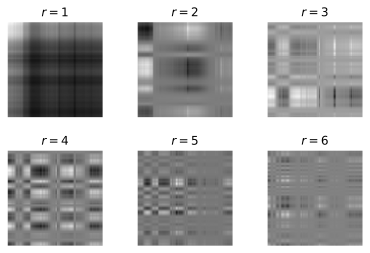
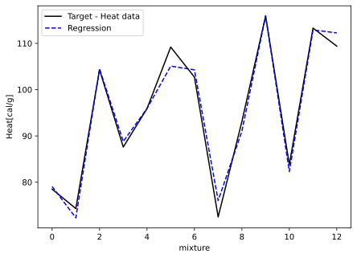

We start off with the so called eigendecomposition. The main idea is to compute a decomposition (or factorization) of a square matrix into a canonical form. We will represent a matrix by its eigenvalues and eigenvectors. In order to do so we need to recall some more definitions from our favourite linear algebra book, such as Golub and Van Loan (2013).
Theorem 5.1 (Singular Value Decomposition) If \(A \in \mathbb{R}^{m\times n}\) (a real \(m \times n\) matrix), there exists orthogonal matrices \[
U = \left[u_1 | \cdots | u_m \right] \in \mathbb{R}^{m\times m}
\quad
\text{and}
\quad
V = \left[v_1 | \cdots | v_n \right] \in \mathbb{R}^{n\times n}
\] such that \[
U^{\mathsf{T}} A V = \Sigma = \operatorname{diag}(\sigma_1, \ldots, \sigma_p) \in \mathbb{R}^{m\times n}, \quad p=\min\{m, n\},
\tag{5.1}\] where \(\sigma_1 \geq \sigma_2 \geq \ldots \sigma_p \geq 0\).
We call \(\sigma_i\) a singular value of \(A\), the \(u_i\) are called the left singular values of \(A\) and \(v_i\) the right singular values of \(A\). Furthermore, \(\sigma_{max} (A)\) is the largest singular value of \(A\) and \(\sigma_{min} (A)\) is the smallest singular value of \(A\).
Instead of providing a concise proof (if you are interested see (Golub and Van Loan 2013, 76)) we show a possible motivation of the definition.
If we compute the eigendecompositions of \(AA^{\mathsf{T}}\) and \(A^{\mathsf{T}}A\). The two matrices have the same positive eigenvalues - the squares of the eigenvalues of \(A\) and we get
\[
\begin{array}{lll} (A A^{\mathsf{T}})U &= & U(\Lambda\Lambda^{\mathsf{T}}),\\
(A^{\mathsf{T}} A)V &= & V(\Lambda^{\mathsf{T}}\Lambda).
\end{array}
\] For \(A \in \mathbb{R}^{m\times n}\) with \(m>n\) we get \[
\Lambda = \left[
\begin{array}{c} \tilde{\Lambda}\\0\end{array}
\right]
\] with the diagonal matrix \(\tilde\Lambda\in\mathbb{R}^{n\times n}\) and \[
\begin{array}{llclc} \Lambda\Lambda^{\mathsf{T}} & = & \left[
\begin{array}{cc}\tilde{\Lambda}^2 & 0 \\0 & 0 \end{array}
\right] & = & \left[
\begin{array}{cc}\tilde{\Sigma} & 0 \\0 & 0 \end{array}
\right], \\
\Lambda^{\mathsf{T}}\Lambda & = & \tilde{\Lambda}^2 &= &\tilde{\Sigma}.
\end{array}
\] If we expand the matrices with zeros to match the correct dimensions this corresponds to our singular value decomposition \[
A = U \Sigma V^{\mathsf{T}}.
\]
Important
The singular value decomposition always exists, is real and all singular vectors are positive.
Again, to visualize the composition helps to better understand what is happening
In the case that of \(m\geq n\) we can save storage by reducing the matrices \(U\) and \(\Sigma\), to their counterpart \(U_1\) and \(\Sigma_1\) by removing the zeros.
Definition 5.1 (Thin SVD) If \(A \in \mathbb{R}^{m\times n}\) for \(m\geq n\), then \[
A = \tilde{U} \tilde{\Sigma} V^{\mathsf{T}}
\] where \[
U_1 = U(:, 1:n) = \left[u_1 | \cdots | u_n \right] \in \mathbb{R}^{m\times n}
\] and \[
\tilde{\Sigma} = \Sigma(1:n, 1:n) = \operatorname{diag}(\sigma_1, \ldots, \sigma_n) \in \mathbb{R}^{n\times n}.
\]
Again, we can cut of the reconstruction at a certain point and create an approximation. More formally this is defined in the next definition.
Definition 5.2 (Low-Rank Approximation) If \(A \in \mathbb{R}^{m\times n}\) and has the SVD \(A = U\Sigma V^{\mathsf{T}}\) than \[
A_k = U(:, 1:k)\, \Sigma(1:k, 1:k)\, V^{\mathsf{T}}(1:k, :)
\] is the optimal low-rank approximation of \(A\) with rank \(k\). This is often called the truncated SVD.
Figure 5.1: Image of MCI I and the reconstruction with reduced rank matrices.
Note
If we compare this to Figure 4.3 we can see that we get a much better result for smaller \(r\). Let us have a look why.
As the matrices \(U\) and \(V\) are orthogonal, they also define a basis of the corresponding (sub) vector spaces. As mentioned before, the SVD automatically selects these and they are optimal.
Consequently, the matrices \(U\) and \(V\) can be understood as reflecting patterns in the image. We can think of the columns of \(U\) and \(V\) as the vertical respectively horizontal patterns of \(A\).
We can illustrate this by looking at the modes of our decomposition \[
M_k = U(:, k) V^{\mathsf{T}}(k, :).
\]
Show the code for the figure
import matplotlib.pyplot as pltimport numpy as npimport numpy.linalg as LA%config InlineBackend.figure_formats = ['svg']rec = [0, 1, 2, 3, 4, 5]fig = plt.figure()axs = [] axs.append(fig.add_subplot(3, 3, 1))axs.append(fig.add_subplot(3, 3, 2))axs.append(fig.add_subplot(3, 3, 3))axs.append(fig.add_subplot(3, 3, 4))axs.append(fig.add_subplot(3, 3, 5))axs.append(fig.add_subplot(3, 3, 6))for i, r inenumerate(rec): M_r = np.outer(U[:, r], Vh[r, :]) axs[i].imshow(M_r, cmap=plt.get_cmap("gray")) axs[i].set_axis_off() r = r +1 axs[i].set_title(f"${r=}$")plt.subplots_adjust(top =0.99, bottom=0.01, hspace=0.35, wspace=0.001)plt.show()

Figure 5.2: Modes of the SVD decomposition of the MCI I image.
Note
The big advantage here is, that the selection is optimal. A disadvantage is that the need to store the basis separately and this increases the necessary storage. We will see in later sections about wavelets and Fourier decomposition how a common basis can be used to reduce the storage by still keeping good reconstructive properties.
5.2 Principal Component Analysis
On of the most important applications of SVD is in the stable computation of the so called principal component analysis (PCA). It is a common technique in data exploration, analysis, visualization, and preprocessing.
The main idea of PCM is to transform the data in such a way that the main directions (principal components) capture the largest variation. In short we perform a change of the basis, see Definition 1.8.
Let us investigate this in terms of a (artificial) data set.
Important
This example is adapted from (Brunton and Kutz 2022, Example: Noisy Gaussian Data, pp. 25-27).
We generate a noisy cloud (see Figure 5.3) that consists of \(10000\) points in 2D, generated from a normal distribution with zero mean and unit variance. The data is than:
scaled by \(2\) in the first direction and by \(\frac12\) in second,
rotated by \(\frac\pi3\)
translation in the direction \(\left[2\ 1\right]^{\mathsf{T}}\).
The resulting matrix \(X\) is a long and skinny matrix with each measurement (or experiment) stacked next to each other. This means, each column represents a new set, e.g. a time step, and each row corresponds to the same sensor.
Figure 5.3: Principal components of the mean-subtracted Gaussian data on the left as, as well as the first three standard deviation ellisoids and the two scaled left singular vectors.
5.2.1 Computation
For the computation we follow the outline given in (Brunton and Kutz 2022, chap. 1.5). First we need to center our matrix \(X\) according to the mean per feature, in our case per row. \[
\overline{x}_j = \frac1n \sum_{i=1}^n X_{ij}
\] and our mean matrix is the outer product with the one vector \[
\overline{X} = \left[\begin{array}{c}1\\\vdots\\1\end{array}\right] \overline{x}
\] which can be used to compute the centred matrix \(B = X - \overline{X}\).
The PCA is the eigendecomposition of the covariance matrix \[
C = \frac{1}{n-1} B^{\mathsf{T}} B
\tag{5.2}\]
Note
The normalization factor of \(n-1\) in Equation 5.2 an not \(n\) is called Bassel’s correction and compensates for the bias in the estimation of the population variance.
As \(C\) is symmetric and positive semi-definite, therefore it has non-negative real eigenvalues and the matrix \(V\) of the eigendecomposition satisfies \(V^{-1} = V^{\mathsf{T}}\) (i.e. it is orthogonal Definition 1.10). The principal components are the eigenvectors and the eigenvalue are the variance along these components.
If we instead compute the SVD of \(B = U\Sigma V^{\mathsf{T}}\) we get \[
C = \frac{1}{n-1} B^{\mathsf{T}}B = \frac{1}{n-1} V \Sigma V^{\mathsf{T}} = \frac{1}{n-1} V (\Lambda^{\mathsf{T}}\Lambda) V^{\mathsf{T}}
\] leading to a way of computing the principal components in a robust way as \[
\lambda_k = \frac{\sigma_k^2}{n-1}.
\]
Tip
If the sensor ranges of our matrix are very different in magnitude the correlation matrix is scaled by the row wise standard deviation of \(B\) similar as for the mean.
In our example we get our scaled \(\sigma_1=1.988\approx 2\) and \(\sigma_2=0.496\approx \frac12\). These results recover our given parameters very well. Additionally we can see that our rotation matrix is closely matched by \(U\) (up to signs) from our SVD: \[
R_{\frac\pi3} = \left[
\begin{array}{cc} 0.5&0.866\\-0.866&0.5\end{array}
\right], \quad U = \left[
\begin{array}{cc}-0.501&-0.865\\-0.865&0.501\end{array} \right]
\]
5.2.2 Example Eigenfaces
We combine SVD/PCA in a illustrative example called eigenfaces as introduced in (Brunton and Kutz 2022, Sec 1.6, pp. 28-34).
The idea is to apply the PCA techniques to a large set of faces to extract the dominate correlations between the images and create a face basis that can be used to represent an image in these coordinates. For example you can reconstruct a face in this space by projecting onto the eigen vectors or it can be used for face recognition as similar faces usually cluster under this projection.
The images are taken from the Yale Face Dataset B, in our case we use a GitHub that provides Julia Pluto notebooks for Chapter 1 to 4 of Brunton and Kutz (2022).
Our training set, so to speak, consists of the first 36 people in the dataset. We compute the average face and subtract it from our dataset to get our matrix \(B\). From here a SVD provides us with our basis \(U\). To test our basis we use individual 37 and a portion of the image of the MCI Headquarter (to see how well it performs on objects). For this we use the projection \[
\tilde{x} = U_r U_r^{\mathsf{T}} x.
\] If we split this up, we first project onto our found patterns (encode) and than reconstruct from them (decode).
Note
We can understand this as encoding and decoding our test image, which is the general setup of an autoencoder (a topic for another lecture).
The correlation coefficients \(x_r = U_r^{\mathsf{T}} x\) might reveal patterns for different \(x\). In the case of faces, we can use this for face recognition, i.e. if the coefficients of \(x_r\) are in the same cluster as other images, they are probably from the same person.
Important
The following code is an adaptation of the (Brunton and Kutz 2022, Code 1.7 and 1.9).
Figure 5.4: Approximate reconstruction of a test face and an object using the eigenfaces basis for different order r.
Note
Due to resource limitations the above computation can not be done for each build. We try to make sure that the code matches the image but if something is different if you try it yourself we apologise for that.
5.3 Further applications of the SVD
There are many more applications of the SVD but we want to highlight some regarding systems of linear equations, \[
A x = b
\tag{5.3}\] where the matrix \(A\), as well as the vector \(b\) is known an \(x\) is unknown.
Depending on the structure of \(A\) and the specific \(b\) we have no, one, or infinitely many solutions. For now the interesting case is where \(A\) is rectangular and therefore we have either an
under-determined system \(m\ll n\), so more unknowns than equations,
over-determined system \(m\gg n\), so more equations than unknowns.
For the second case (more equations than unknowns) we often switch to solving the optimization problem that minimizes \[
\|Ax-b\|_2^2.
\tag{5.4}\] This is called the least square solution. The least square solution will also minimize \(\|Ax-b\|_2\). For an under-determined system we might seek the solution which minimizes \(\|x\|_2\) called the minimum norm solution.
If we us the SVD decomposition for \(A = U \Sigma V^{\mathsf{T}}\) we can define the following
Definition 5.3 (Pseudo-inverse) We define the matrix \(A^\dagger \in \mathbb{R}^{m\times n}\) by \(A^\dagger = V\Sigma^\dagger U^{\mathsf{T}}\) where \[
\Sigma^\dagger = \operatorname{diag}\left(\frac{1}{\sigma_1}. \frac{1}{\sigma_2}, \ldots, \frac{1}{\sigma_r}, 0, \ldots, 0\right) \in \mathbb{R}^{m\times n}, \quad r=\operatorname{rank}(A).
\]
The matrix \(A^\dagger\) is often called the Moore-Penrose left pseudo-inverse as it fulfils the Moore-Penrose conditions conditions. It is also the matrix to provides the minimal Frobenius norm solution to \[
\min_{X \in \mathbb{R}^{m\times n}}\| A X - I_n\|_F.
\]
If we only use the truncated version, i.e. where we only use non-zero singular values, we can use it to find good solutions to Equation 5.4.
In numpy it can be computed by numpy.linalg.pinv.
Definition 5.4 (Condition number) The condition number of a matrix provides a measure how sensitive the solution of Equation 5.3 is to perturbations in \(A\) and \(b\). For a square matrix \(A\) the condition number is defined as \[
\kappa(A) = \|A\| \left\|A^{-1}\right\|,
\] for an appropriate underlying norm. For the 2-norm \(\kappa_2\) is \[
\kappa_2(A) = \|A\|_2 \left\|A^{-1}\right\|_2 = \frac{\sigma_{max}}{\sigma_{min}}.
\]
To get a better idea on what this means think of it in this way. For the perturbed linear system \[
A(x + \epsilon_x) = b + \epsilon_b,
\] we can outline the worst case, where \(\epsilon_x\) aligns with the singular vector of the largest singular vector and \(x\) with the smallest singular value, i.e. \[
A(x + \epsilon_x) = \sigma_{min}x + \sigma_{max}\epsilon_x.
\] Consequently, the output signal-to-noise \(\|b\|/\|\epsilon_b\) is equivalent with the input signal-to-noise \(\|x\|/\|\epsilon_x\) and the factor between those two is \(\kappa_2(A)\).
In this sense \(\kappa_2\) can be extended for more general matrices.
First we just take a linear correlation that we augment with some Gaußian Noise. So our matrix \(A\) is simple a vector with our \(x\)-coordinates and \(b\) is the augmented image under our linear correlation. \[
\left[
\begin{array}{c} a_1 \\ a_2 \\ \vdots \\ a_n \end{array}
\right]x =
\left[
\begin{array}{c} b_1 \\ b_2 \\ \vdots \\ b_n \end{array}
\right]
\quad
\Leftrightarrow
\quad
U\Sigma V^{\mathsf{T}} x = b
\quad
\Leftrightarrow
\quad
x = A^\dagger b
\]
For this example \(\Sigma = \|a\|_2\), \(V=1\), and \(U=\tfrac{a}{\|a\|_2^2}\). This is basically just the projection of \(b\) along our basis \(a\) and this is \[
x = \frac{a^{\mathsf{T}} b}{a^{\mathsf{T}} a}.
\]
The second example is based on the Portland Cement Data build in with MATLAB. In Python we again use the dataset provided on GitHub. The data set contains the heat generation during the hardening of 12 cement mixtures comprised of 4 basic ingredients, i.e. \(A\in \mathbb{R}^{13\times 4}\). The aim is to determine the weights \(x\) that relate the proportion of the ingredients to the heat generation in the mixture.
Show the code for the figure
import matplotlib.pyplot as pltimport numpy as npimport numpy.linalg as LAimport requestsimport io%config InlineBackend.figure_formats = ['svg']# Transform the content of the file into a numpy.ndarrayresponse = requests.get("https://github.com/frankhuettner/Data_Driven_Science_Julia_Demos/raw/refs/heads/main/DATA/hald_ingredients.csv")# Transform the content of the file into a numpy.ndarrayA = np.genfromtxt(io.BytesIO(response.content), delimiter=",")response = requests.get("https://github.com/frankhuettner/Data_Driven_Science_Julia_Demos/raw/refs/heads/main/DATA/hald_heat.csv")b = np.genfromtxt(io.BytesIO(response.content), delimiter=",")U, s, VT = LA.svd(A, full_matrices=False)x = VT.T @ np.diag(1/s) @ U.T @ bplt.plot(b, color="k", label="Target - Heat data")plt.plot(A@x, '--', color="b", label="Regression")plt.legend()plt.xlabel("mixture")plt.ylabel("Heat[cal/g]")plt.show()

Figure 5.6: Estimate for hardening in cement mixtures.
This concludes our investigation of matrix decompositions, we will investigate further decompositions of signals later, but for now we dive deeper into regression.
Brunton, Steven L., and J. Nathan Kutz. 2022. Data-Driven Science and Engineering - Machine Learning, Dynamical Systems, and Control. 2nd ed. Cambridge: Cambridge University Press.
Golub, Gene H., and Charles F. Van Loan. 2013. Matrix Computations. 4th ed. Johns Hopkins Studies in the Mathematical Sciences.
{kind=link}
{kind=link}
{kind=link}